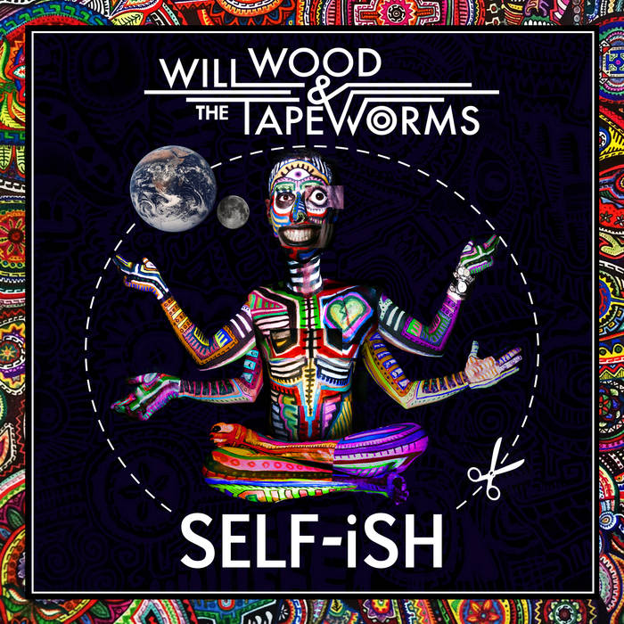
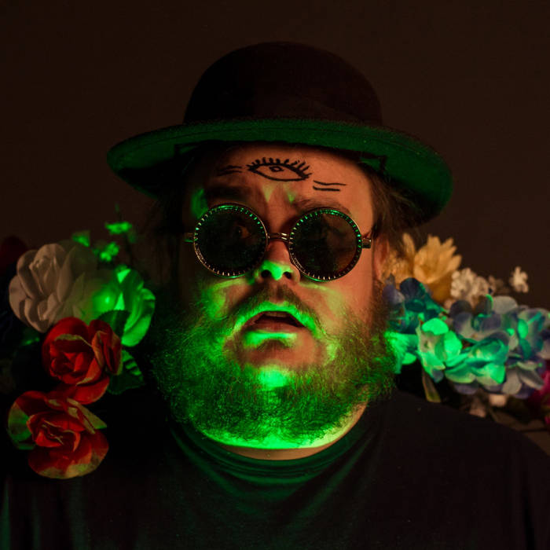
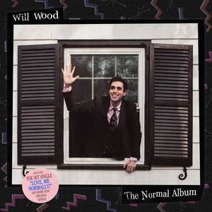
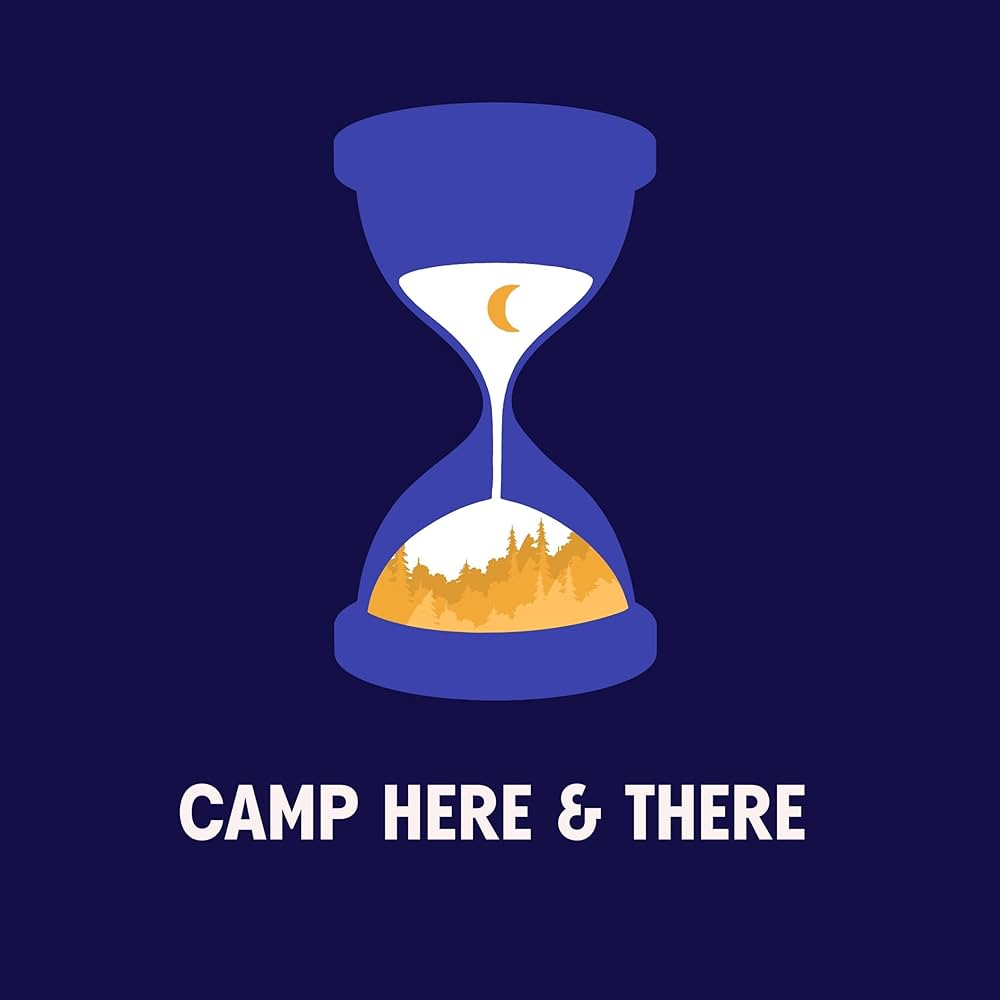
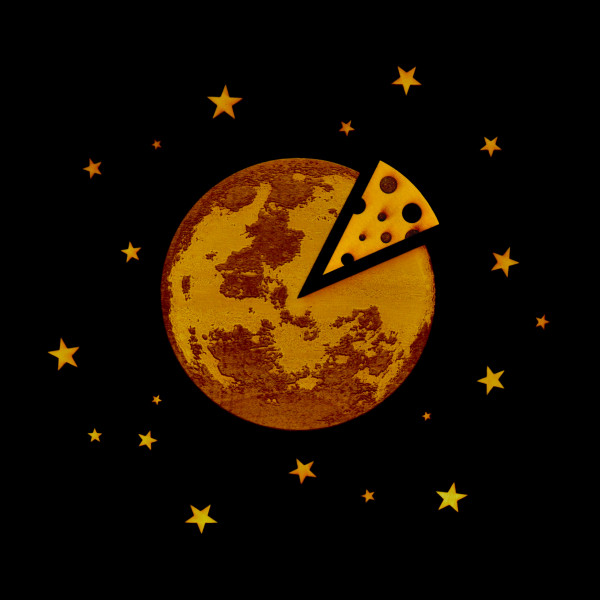
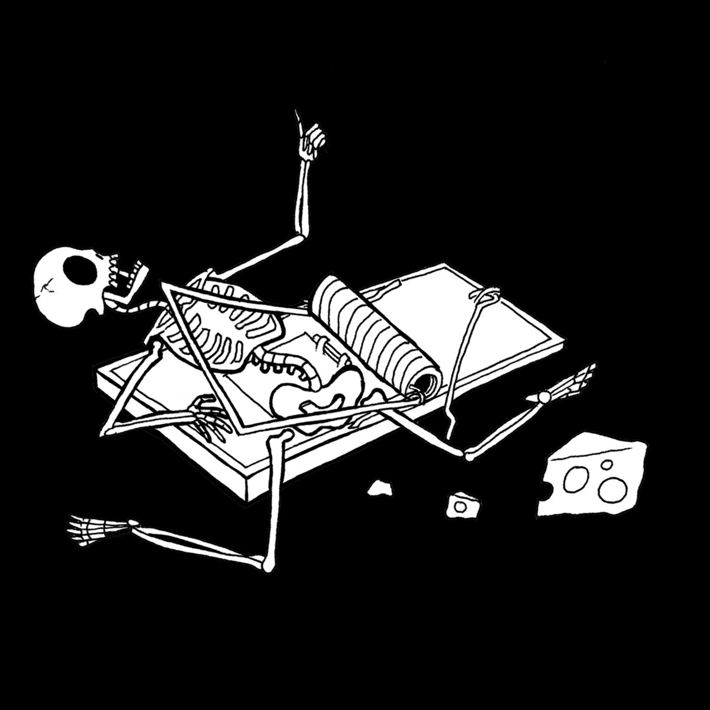

Everything is a lot

- 6up 5oh Cop-Out (Pro/Con)
- Skeleton Appreciation Day in Vestal, NY (Bones)
- Front Street
- ¡Aikido! (Neurotic/Erotic)
- White Knuckle Jerk (Where Do You Get Off?)
- (Cover This Song) A Little Bit Mine
- Thermodynamic Lawyer, Esq, G.F.D.
- RED MOON
- Lysergide Daydream
- The First Step
- Jimmy Mushrooms' Last Drink: Bedtime in Wayne, NJ
- Chemical Overreaction / Compound Fracture
- Everything is a lot.
Self-Ish

- Self-
- 2012
- Cotard's Solution (Anatta, Dukkha, Anicca)
- Mr. Capgras Encounters a Secondhand Vanity: Tulpamancer's Prosopagnosia/Pareidolia (As Direct Result of Trauma to the Fusiform Gyrus)
- The Song with Five Names, a.k.a. Soapbox Tao, a.k.a. Checkmate Atheists! a.k.a. Neospace Government, a.k.a. You Can Never Know
- Hand Me My Shovel, I'm Going In!
- Dr. Sunshine is Dead
- -Ish
The Real Will Wood (Live)

- Self- - Live
- 10-4 6-up 5-Oh Cop-out Pro-Con - Live
- Cotard’s Solution [Kill Me?] - Live
- Dr. Sunshine Lives! - Live
- Where Do You Get Off? - Live
- Aikido - Live
- Thermodynamic Lawyer - Live
- Front Street - Live
- Wasting Away Again in Bupropionville - Live
- Hand Me My [X] I’m [Y]! - Live
- The First Step - Live
- 2012 - Live
- Mr. Capgras - Live
- Chemical Overreaction - Live
- Fibrodysplasia Ossificans Progressiva - Live
- -ish - Live
The Normal Album

-
Suburbia Overture / Greetings from Mary Bell Township! / (Vampire) Culture / Love Me, Normally
- 2econd 2ight 2eer (that was fun, goodbye.)
- Laplace’s Angel (Hurt People? Hurt People!)
- I / Me / Myself
- ...well, better than the alternative
- Outliars and Hyppocrates: a fun fact about apples
- BlackBoxWarrior - OKULTRA
- Marsha, Thankk You for the Dialectics, but I Need You to Leave
- Love, Me Normally
- Memento Mori: the most important thing in the world
Camp Here & There

- Welcome to Camp Here & There
- Morning Announcements
- Venetian Blind Man (Song)
- Good Morning, Campers!
- The Rhumba of Death
- Yes, to Err is Human, So Don't Be One. (Song)
- Under a Technicolor Sky
- Afternoon Announcements
- Your Body, My Temple
- Under a Monochromatic Sky
- Evening Announcements
- When Somebody Needs You
In Case I Make It

- Tomcat Disposables
- Becoming the Lastnames
- Cicada Days
- Euthanasia
- Falling Up
- That's Enough, Let's Get You Home.
- Um, It’s Kind of a Lot
- Half-Decade Hangover
- Vampire Reference in a Minor Key
- You Liked This (Okay, Computer!)
- The Main Character
- Against the Kitchen Floor
- Sex, Drugs, Rock ‘n’ Roll
- Big Fat Bitchie’s Blueberry Pie, Christmas Tree, and Recreational Jell-o Emporium a.k.a. “Mr. Boy is on the Roof Again” (Feat. Pasta by Sneakers McSqueakers) [From “B.F.B.’s B-Sides: Bagel Batches, Marsh-Mallows, & Barsh-Mallows”]
- Willard!
- White Noise
IN CASE I DIE (Live)

- Cicada Days - Live at Knitting Factory, Spokane, WA
- The Main Character - Live at The Vermont Hollywood, Los Angeles, CA
- ...And If I Did, You Deserved It. (”In case I make it,” Outtake) - Live at Knitting Factory, Spokane, WA
- Against the Kitchen Floor - Live in Charlotte, NC
- Becoming the Lastnames - Live at City Winery, Nashville, TN
- Vampire Reference in a Minor Key - Live at World Café Live, Philadelphia, PA
- Half-Decade Hangover - Live at City Winery, Atlanta, GA
- The Song With 5 Names - Live at The Foundry, Lakewood, OH
- Euthanasia - Live at Hawthorne Theater, Portland, OR
- Jimmy Mushrooms’ Last Drink - Live at Austin City Limits, Austin, TX
- Laplace’s Angel - Live at Blueberry Hill Duck Room, St. Louis, MO
- I / Me / Myself - Live at City Winery, Atlanta, GA
- The First Step - Live at The Bitter End, New York, NY
- Skeleton Appreciation Day - Live at Ace of Cups, Columbus, OH
- Tomcat Disposables - Live at Nectar Lounge, Seattle, WA
- White Noise - Live at The Vermont Hollywood, Los Angeles, CA
- Love, Me Normally - Live at Hawthorne Theater, Portland, OR
- Misanthrapologist (”In case I make it,” Outtake) - Live in Backroom Studios, Rockaway, NJ
- Falling Up - Live in Backroom Studios, Rockaway, NJ
- That’s Enough, Let’s Get You Home - Live in Backroom Studios, Rockaway, NJ